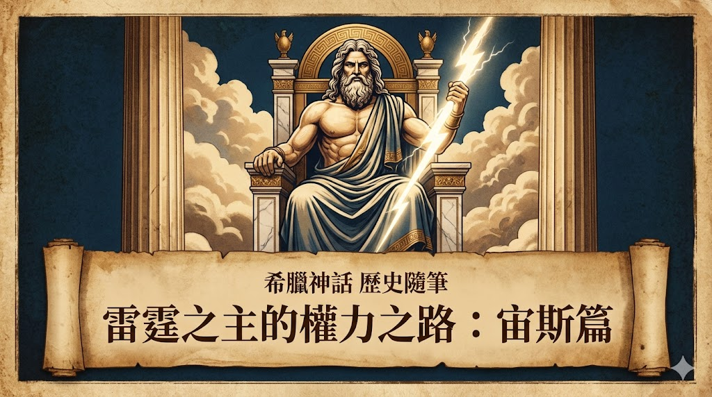

在希臘神話的宏大敘事中，宙斯不僅是奧林帕斯山的統治者，更是秩序與正義的維護者。他的崛起是一場慘烈的代際戰爭，他如何用雷霆建立起天界的絕對秩序？
宙斯（Zeus）的崛起並非順遂。他的父親克洛諾斯（Cronus）為了防止被子女推翻，將出生後的孩子一一吞噬。這象徵著原始權威無情的自我保護，而宙斯則是這個殘酷循環的打破者。
成年後的宙斯展開了長達十年的「泰坦戰爭」，並與獨眼巨人結盟。獨眼巨人為他鍛造了「雷霆」，標誌著奧林帕斯理性秩序取代了舊有的混亂。
宙斯常以多變的形象降臨人間。如果我們跳脫文學層面，這些「化身故事」背後隱含著深層的政治意涵。古希臘各個城邦往往試圖將家族血緣與神王聯繫起來，這是一種神格化的政治宣傳。
最著名的例子是宙斯化身為白公牛，誘走了公主歐羅巴（Europa）。這段旅程後來被定格，而他們抵達的土地，便以「歐羅巴」為名。
普羅米修斯（Prometheus）偷取聖火交付給凡人，引發了宙斯的震怒。對於宙斯而言，秩序建立在「神凡有別」的基礎上。
他將普羅米修斯鎖在高加索山上受難，反映了宙斯對文明邊界的嚴格把控：人類必須學會尊重神設定的絕對界限。